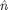
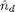
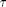

Contents
Escalar Poisson Equation rutine solver for
Routine for solving a PNP-MOSFET junction for the region:
%┌________________________┠%|++++| ---N--- |++++| %|+P++| |+P++| %|++++| |++++| %|____| |____| %| | %| | %| | %|________________________|
Governing equation

Where:
 is the number density of a doped region at time t,  is the initial number density of the doped regions and  is a constant.
clear, clc, %close all;
IC's
L = 1.8; dx = 0.1; x = 1:dx:L; n = 18; H = 1.2; dy = 0.1; y = 1:dy:H; m = 12; n_1 = 1; % initial doping for region 1 (Silicon) n_2 = 3; % initial doping for region 2 (gate A) n_3 = 3; % initial doping for region 3 (gate B)
Grid
n_d = ones(m,n); % Silicon n_d(1:m/4, 1:n/6 ) = 3; % gate A n_d(1:m/4,5*n/6+1:n) = 3; % gate B phi = zeros(m,n); % electric potential grid phi_tilde = zeros(m,n); phi_next = zeros(m,n);
Computing k(x,y) on the grid:
k = ones(m,n); % Assuming all k values constants
BC's
Dirichlet:
phi(1,1:n/6) = 0; % gate A phi(1,n/3+1:2*n/3) = -0.8; % central gate phi(1,5*n/6+1:n) = 1; % gate B % Neumann BC: Every where else!
Main Loop
A = zeros(m,n); B = zeros(m,n); C = zeros(m,n); D = zeros(m,n); r = 0.0001; iter = 0; r_iter = 1; while r_iter >= r %for s=1:1100 % we know the boundary values from the begining phi_tilde(1,:) = 0; % matrix bottom row, Dirichlet BC phi_tilde(m,:) = 1-cos(pi*x); % matrix top row, Dirichlet BC for i=2:m-1 for j=2:n-1 A(i,j)=k(i,j)+k(i+1,j); B(i,j)=k(i,j)+k(i,j+1); C(i,j)=k(i,j)+k(i-1,j); D(i,j)=k(i,j)+k(i,j-1); if j == 2 % Matrix left column, Neumann BC phi_tilde(i,j)=... 1/(k(i+1,j)+k(i-1,j)+3*k(i,j)+k(i,j+1))*(... A(i,j)*phi(i+1,j)+... B(i,j)*phi(i,j+1)+... C(i,j)*phi_tilde(i-1,j)); elseif j == n-1 % Matrix right column, Neumann BC phi_tilde(i,j)=... 1/(k(i+1,j)+k(i-1,j)+3*k(i,j)+k(i,j-1))*(... A(i,j)*phi(i+1,j)+... C(i,j)*phi_tilde(i-1,j)+... D(i,j)*phi_tilde(i,j-1)); else phi_tilde(i,j)=... 1/(k(i+1,j)+k(i-1,j)+4*k(i,j)+k(i,j+1)+k(i,j-1))*(... A(i,j)*phi(i+1,j)+... B(i,j)*phi(i,j+1)+... C(i,j)*phi_tilde(i-1,j)+... D(i,j)*phi_tilde(i,j-1)); end end end phi_tilde(2:m-1,1)=phi_tilde(2:m-1,2); % Left matrix column, Neumann BC phi_tilde(2:m-1,n)=phi_tilde(2:m-1,n-1); % Right matrix column, Neumann BC phi_next = phi + omega*( phi_tilde - phi ); r_iter = norm(phi_next-phi,2); phi = phi_next; iter = iter+1; end fprintf('iterations: %4.1f \n',iter);
Subscripted assignment dimension mismatch.
Error in ==> MOSFET at 60
phi_tilde(m,:) = 1-cos(pi*x); % matrix top row, Dirichlet BC